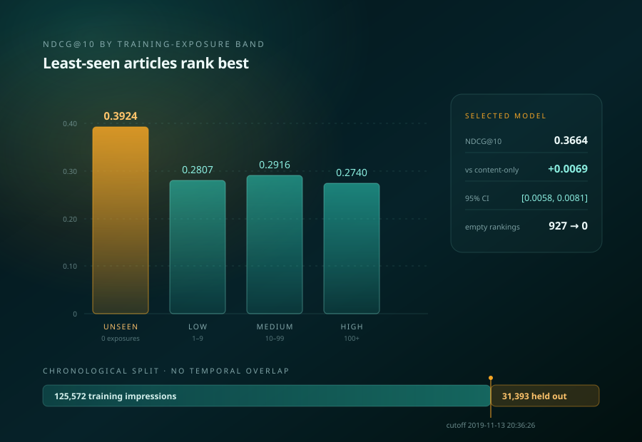

Does the data say what we think?
Silent failures, missing outputs, and label validation — the failure modes that survive every standard sanity check and quietly bias everything downstream.
Applied ML · Model validation · Uncertainty quantification
I hold an MS in Aerospace Engineering from Georgia Tech, where I worked in the Aerospace Systems Design Laboratory on surrogate modeling, uncertainty quantification, and the reliability of large-scale simulation pipelines. Before that I spent eighteen months on airworthiness certification for the Rolls-Royce Trent XWB-84 EP, where a model being wrong was not an academic problem.
Most of my work comes back to the same question: when a model produces a number, what would have to be true for that number to mean anything? That question has taken me through solid rocket motor simulations, electromagnetic solvers, aviation emissions pathways, road networks, and equity markets. I also serve as graduate chair of the Women of Aeronautics and Astronautics (WoAA) chapter at Georgia Tech.

data
models
validation
decisions

How I work
The interesting part of applied machine learning is rarely the model. It is the layer underneath: whether the data is what you think it is, whether the validation protocol actually holds anything out, and whether an uncertainty estimate means what the person reading it assumes it means.
I have found a 15,120-case simulation study where 45% of runs failed silently and nobody had noticed. I have published a trading backtest whose headline finding is that the signal does not work. Both are the same instinct: check the thing before you build on it.
Throughline
Silent failures, missing outputs, and label validation — the failure modes that survive every standard sanity check and quietly bias everything downstream.
Leakage controls, held-out protocols matched to the structure of the data, and tests designed to fail when the pipeline is wrong.
Gaussian processes, surrogate error characterisation, uncertainty propagation, and knowing where an approximation breaks down.
Transaction costs, regulatory thresholds, certification standards — the point where a model either holds up or does not.
Featured work

01 · machine learning · data quality
45% of a solid rocket motor design sweep produced no output and no error message — failures invisible to every standard validity check. A naive split scored 99.8% by memorising duplicated geometries; collapsing to 1,680 unique combinations and testing only on unseen geometry gave the honest figure, 96.8% accuracy at AUC 0.986. Source-level diagnosis traced the silence to an uncapped convergence loop.

02 · time-series ML · validation methodology
A monthly cross-sectional equity strategy built to a strict walk-forward protocol and published with its own negative result. Net Sharpe 0.25 (t = 0.81), rising only to 1.07 with costs set to zero. Every specification tested is logged and committed — including the one that looked best.

03 · recommender systems · evaluation methodology
A leakage-aware news recommender on Microsoft MIND, split chronologically at 2019-11-13 20:36:26 so nothing is scored out of order. Articles never once shown as training candidates score NDCG@10 0.3924, against 0.2740 for the most-exposed band — backwards, confounded by recency, and published as an open question rather than trimmed. The content model also abstained silently on 927 of 31,393 impressions; routing those to popularity recovers all of them.

04 · surrogate modeling · scientific computing
Gaussian process, response-surface and radial-basis-function surrogates compared across benchmark functions, with multifidelity datasets, POD feasibility and Operator Inference — focused on where each approximation breaks rather than which one wins.
View projects →
05 · scientific computing · pipeline engineering
A mesh-free boundary element electromagnetic solver written from the integral formulation through to code, and the operator-learning surrogate trained on its output. That surrogate ran for 11 GPU-hours with a loss bit-identical to five significant figures — including across a warm restart that raised the learning rate 200×. NaN guards in the forward pass had rewritten an overflow into a finite loss carrying zero gradient. Confirmed from the checkpoint rather than inferred: AdamW held state for 45 of 61 parameter tensors.

06 · modeling under uncertainty · in production use
Well-to-wake lifecycle and techno-economic model of a forest-residue aviation fuel pathway under parametric uncertainty, benchmarked against GREET, CORSIA and 40BSAF-GREET. The resulting model is in active use by the sponsor, the U.S. Endowment for Forestry.
Read case study →
07 · graph modeling · geospatial
Road-network model of Atlanta built from OpenStreetMap: disruption scenarios, origin–destination travel-time comparison, and accessibility outcomes under stress. Built with OSMnx, NetworkX and pandas.
View project →Methods
I like methods that make models useful without pretending uncertainty, assumptions, or scale do not matter.
Supervised learning on tabular and time-series data, CNNs, clustering, anomaly detection, and feature engineering with scikit-learn and PyTorch.
Leakage control, held-out protocols matched to data structure, walk-forward evaluation, shuffled-label tests, and multiple-testing discipline.
Gaussian process regression, surrogate error characterisation, parametric and Monte Carlo uncertainty propagation, and calibration.
Multifidelity datasets, proper orthogonal decomposition, Operator Inference, response surfaces, and design of experiments.
Regression and inference, variable selection under large-sample significance inflation, assumption diagnostics, and subsampling consensus methods.
Python, pandas, NumPy, SciPy, Git, pytest, reproducible pipelines, and working inside codebases other people have to run.
Focus
Six threads, one question: whether a model’s output can be believed, and what would have to be true for it to be.
Beyond research
Making playlists, dancing, and painting keep me close to rhythm, texture, and storytelling — the same instincts I bring to systems work.
I build moods through sequencing — small transitions, memory, texture, and rhythm.
Movement keeps me attentive to timing, flow, and the way systems feel when they change.
Painting helps me slow down and notice composition, contrast, and visual structure.
Playlist moodboard
Music is part of how I remember phases of work: writing sprints, debugging sessions, long walks, and the feeling of starting something new.
Find me